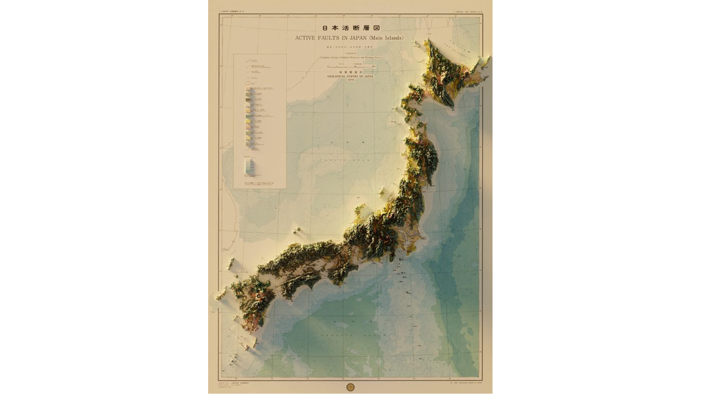
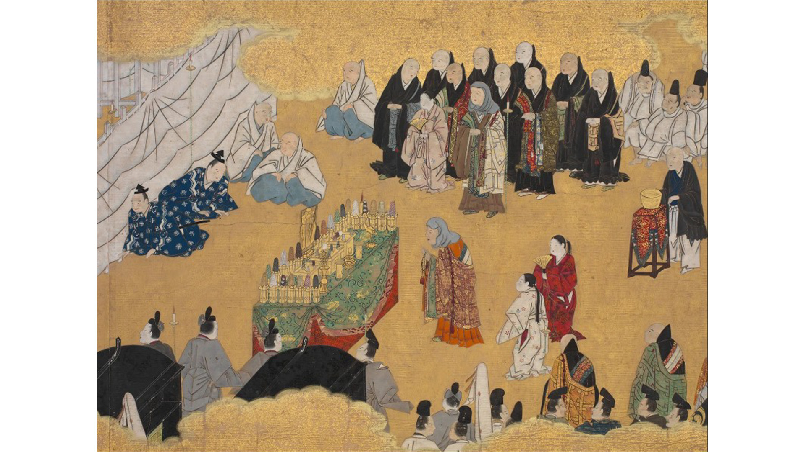
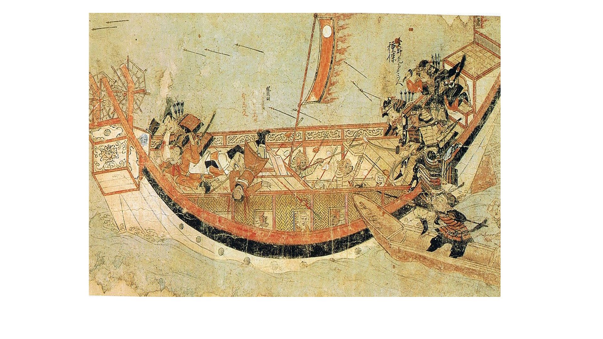
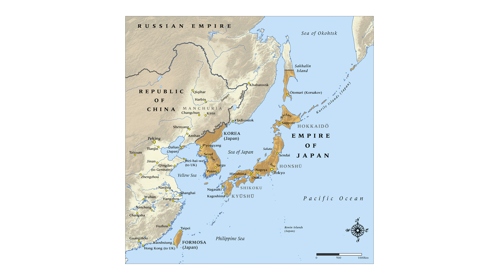
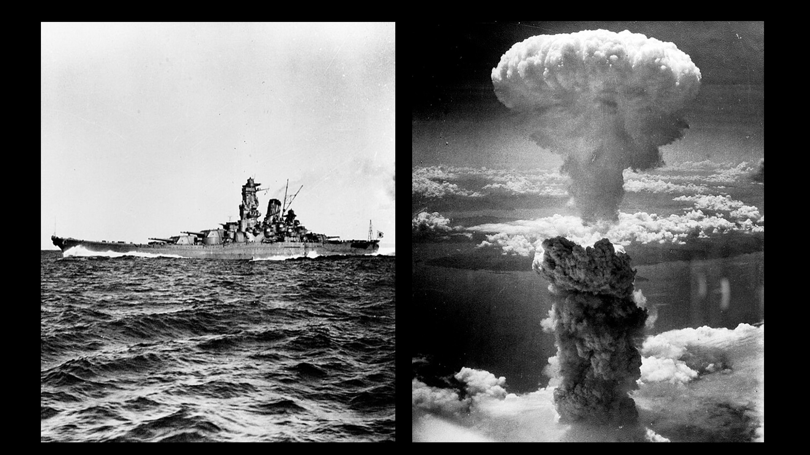
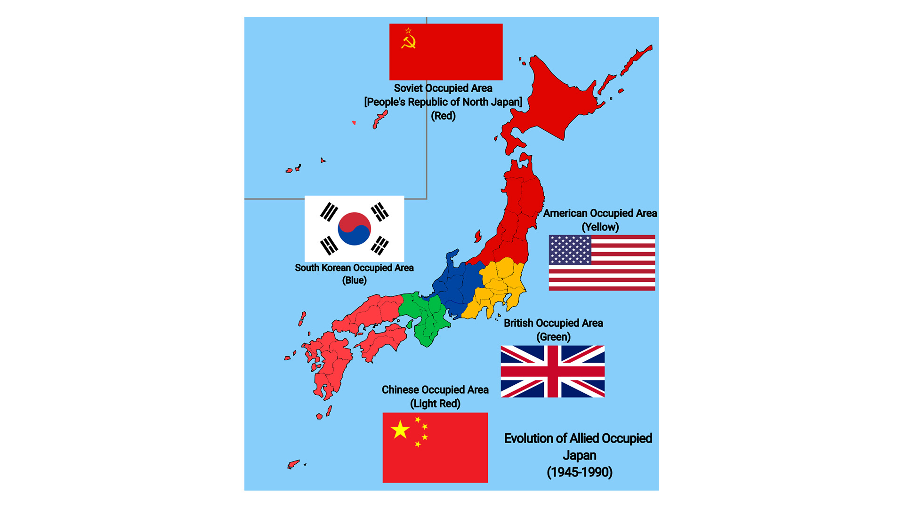
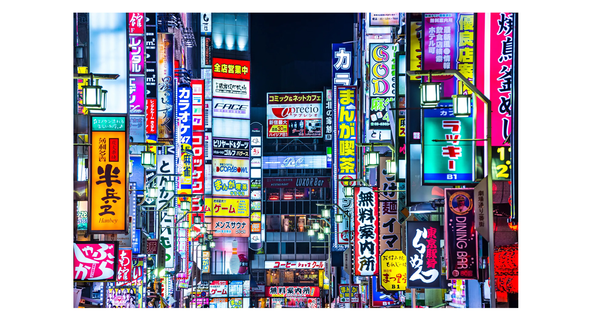

Η Ιαπωνία (ιαπωνικά: 日本 επίσημα: 日本国, ) είναι νησιωτική χώρα της Ανατολικής Ασίας. Έχει έκταση 377.975 τ.χλμ. και πληθυσμό 124.090.000 κατοίκους, σύμφωνα με επίσημη εκτίμηση για το 2024[2]. Η πρωτεύουσα και μεγαλύτερη πόλη της Ιαπωνίας, είναι το Τόκιο, το οποίο μαζί με τη μητροπολιτική περιοχή έχει περισσότερους από 37 εκατομμύρια κατοίκους και αποτελεί τη μεγαλύτερη Μητροπολιτική Περιοχή στον κόσμο.
Η Ιαπωνία, εκτείνεται σε μεγάλο μέρος του Ιαπωνικού Αρχιπελάγους, στον βορειοδυτικό Ειρηνικό ωκεανό και κατά μήκος των ακτών της Ρωσίας και της Κορέας, από τις οποίες χωρίζεται από τη Θάλασσα της Ιαπωνίας. Αποτελείται από τέσσερα μεγάλα νησιά, Χοκκάιντο, Σικόκου, Κιούσου και Χονσού, τα οποία συνοδεύονται επίσης από χιλιάδες μικρότερα (για την ακρίβεια το αρχιπέλαγος της Ιαπωνίας αποτελείται από 6.852 νησιά).Τα περισσότερα από αυτά είναι ορεινά και ηφαιστειακά· για παράδειγμα η ψηλότερη κορυφή της Ιαπωνίας το όρος Φούτζι, είναι ηφαίστειο.
Οι Ιάπωνες ή Νιχόν-τζιν (日本人) την αποκαλούν Νιχόν (Nihon) ή Νιππόν (Nippon) και το όνομά της είναι συνδυασμός δύο ιδεογραμμάτων, που σημαίνουν ήλιος και αρχή αντίστοιχα. Είναι γνωστή επίσης ως Χώρα του Ανατέλλοντος Ηλίου. Οι Ιάπωνες αποτελούν το 98,5% του πληθυσμού της χώρας. Από τη μεταρρύθμιση του 1947, η χώρα έχει έναν Αυτοκράτορα και εκλεγμένο κοινοβούλιο που ονομάζεται Εθνική Δίαιτα.
Η Ιαπωνία αποτελεί την τρίτη μεγαλύτερη οικονομία στον κόσμο σε ονομαστικό ΑΕΠ (πρόσφατοι αριθμοί της κυβέρνησης από την Κίνα υποστηρίζουν ότι η Κίνα είναι σήμερα η δεύτερη) και η τέταρτη μεγαλύτερη σε αγοραστική δύναμη. Επίσης, είναι ο τέταρτος μεγαλύτερος εξαγωγέας στον κόσμο και ο τέταρτος μεγαλύτερος εισαγωγέας. Είναι, επίσης, σήμερα μη μόνιμο μέλος του Συμβουλίου Ασφαλείας του ΟΗΕ. Παρόλο που η Ιαπωνία έχει επισήμως παραιτηθεί του δικαιώματός της να κηρύξει πόλεμο, διατηρεί σύγχρονο και εκτεταμένο στρατό που απασχολείται με την αυτοάμυνα και τη διατήρηση της ειρήνης. Πρόκειται για μια ανεπτυγμένη χώρα με πολύ υψηλό βιοτικό επίπεδο (δέκατος ένατος υψηλότερος Δείκτης ανθρώπινης ανάπτυξης). Μετά τη Σιγκαπούρη, η Ιαπωνία έχει τα χαμηλότερα ποσοστά ανθρωποκτονιών (συμπεριλαμβανομένης της απόπειρας ανθρωποκτονίας) στον κόσμο. Η Ιαπωνία έχει το υψηλότερο προσδόκιμο ζωής από οποιαδήποτε άλλη χώρα του κόσμου (σύμφωνα τόσο με τις εκτιμήσεις του ΟΗΕ και του ΠΟΥ) και το τρίτο χαμηλότερο ποσοστό βρεφικής θνησιμότητας.

"Χάρτης Ιαπωνίας"
Τα Προϊστορικά Χρόνια
Λίθινη Εποχή
30.000-10.000π.Χ.
Ονομάζεται έτσι εξαιτίας της εμφάνισης λίθινων εργαλείων.
Λίγα πράγματα είναι γνωστά για αυτή την περίοδο.
Εποχή Τζόμον
10.000 π.Χ.-3ο αι. π.Χ.
Η λέξη Τζόμον είναι σύνθετη και σημαίνει «χάραγμα με σχοινί». Διάσημη από εκείνη την εποχή έρχεται η κεραμική Τζόμον με τα σχοινόμορφα χαράγματα στα κεραμικά της. Προς το τέλος της εμφανίζεται και η χρήση του ατσαλιού, ιδιαίτερα στην κατασκευή όπλων.
Εποχή Γιαγιόι
3ος αι. π.Χ.- 3ο/4ο αι.
Τα κεραμικά της εποχής Γιαγιόι, αν και σε ορισμένες περιπτώσεις φέρουν σχοινόμορφα χαράγματα, εντούτοις είναι εντελώς διαφορετικά στην τεχνοτροπία τους και εύκολα διακρίνονται από εκείνα της κεραμικής Τζόμον. Το σημαντικότερο στοιχείο, ωστόσο, είναι το γεγονός ότι στις ιαπωνικές νήσους εισβάλλουν λαοί από την κορεατική χερσόνησο, περίπου τον 3ο π.Χ. αιώνα.
Εποχή Κοφούν
3ος/4ος αι.-7ο αι.
H λέξη κοφούν σημαίνει τύμβος που ήταν και το ιδιαίτερο χαρακτηριστικό εκείνης της περιόδου. Σημαντικό στοιχείο για τη χρονική τοποθέτηση αυτής της εποχής αποτελεί η γραπτή μαρτυρία ενός αρχαίου κινεζικού αρχείου στο οποίο αναφέρεται πως η αυτοκράτειρα Χιμίχο έστειλε πρεσβευτή στην κινεζική πρωτεύουσα με δώρο 100 καθρέπτες και άλλα δώρα τα έτη 238 και 240. Λίγο αργότερα πέθανε και τάφηκε σε ένα μεγάλο τύμβο που χτίστηκε προς τιμήν της.
Κλασική περίοδος
Η μετάβαση της Ιαπωνίας στα κλασικά χρόνια ξεκινά από την περίοδο Γιαμάτο (300-710). Κατά την αρχή της περιόδου Κοφούν, αναπτύσσεται ένα κέντρο δύναμης στην πεδιάδα Κινάι, με πολιτικό κέντρο την επαρχία Γιαμάτο. Το όνομα της περιόδου προέρχεται από τους μεγάλους τάφους (κοφούν) που χτίστηκαν για τους πολιτικούς ηγέτες της εποχής. Η Ιαπωνία της περιόδου Γιαμάτο εκτεινόταν από το Κιούσου έως την πεδιάδα Κινάι, χωρίς να περιλαμβάνει το Κάντο, το Τοχόκου και τη νήσο Χοκάιντο.
Ο αυτοκράτορας ήταν ο κυβερνήτης της Ιαπωνίας, αλλά η πολιτική δύναμη πέρασε σύντομα στην πατριά Σογκά, με αποτέλεσμα οι αυτοκράτορες να λειτουργούν κυρίως ως τελετουργικά σύμβολα του κράτους. Οι φιλικές σχέσεις με το βασίλειο Κουντάρα στην κορεατική χερσόνησο ενίσχυσαν την επιρροή από την ηπειρωτική χώρα, εισάγοντας τον Βουδισμό στην Ιαπωνία το 538 ή 552. Ο πρίγκηπας Σοτόκου προώθησε κινεζικές ιδέες, έγραψε το σύνταγμα των δεκαεπτά άρθρων και εισήγαγε θεωρίες του Κομφουκιανισμού, του Ταοϊσμού και το κινεζικό σύστημα γραφής.
Το 645, ο Νακατόμι νο Καματάρι ξεκίνησε την εποχή της πατριάς Φουτζιβάρα, η οποία διήρκεσε μέχρι τον 11ο αιώνα, με την άνοδο των σαμουράι. Την ίδια χρονιά, οι μεταρρυθμίσεις Ταϊκά καθιέρωσαν νέα κυβέρνηση και διοικητικό σύστημα σύμφωνα με το κινεζικό πρότυπο. Η γη αγοράστηκε από το κράτος και αναδιανεμήθηκε, εισάγοντας ένα νέο φορολογικό σύστημα παρόμοιο με αυτό της Κίνας.
Περίοδος Νάρα και Χεϊάν

"Σκηνή κηδείας από το κλασικό ιαπωνικό μυθιστόρημα "Η Ιστορία του Γκέντζι""
Το 710, η πρώτη μόνιμη ιαπωνική πρωτεύουσα εγκαθίσταται στη Νάρα, σχεδιασμένη σύμφωνα με κινεζικά πρότυπα, με μεγάλα βουδιστικά μοναστήρια που κέρδισαν γρήγορα πολιτική επιρροή. Για να προστατευθεί η θέση του αυτοκράτορα, η πρωτεύουσα μετακινήθηκε στο Ναγκαόκα το 784 και στο Χεϊάν (Κιότο) το 794, όπου έμεινε για πάνω από χίλια χρόνια.
Οι περίοδοι Νάρα και Χεϊάν χαρακτηρίζονται από την αποδυνάμωση της κινεζικής επιρροής, παρότι παρέμεινε σημαντική. Οι εισαγόμενες ιδέες «εθνικοποιήθηκαν» για να ικανοποιηθούν οι ιαπωνικές ανάγκες. Καθιερώθηκαν νέα κυβερνητικά γραφεία, και τα αμιγώς ιαπωνικά καλλιτεχνικά κινήματα έγιναν δημοφιλή. Η ανάπτυξη των συλλαβών Κάνα επέτρεψε τη δημιουργία ιαπωνικής λογοτεχνίας. Νέες βουδιστικές αιρέσεις απορροφήθηκαν από το ιαπωνικό πρότυπο.
Οι μεταρρυθμίσεις Ταϊκά είχαν αποτυχίες, όπως οι αναδασμοί της γης και το φορολογικό σύστημα, οδηγώντας στην εξασθένηση των αγροτών και στην αύξηση της δύναμης των μεγάλων γαιοκτημόνων και των βουδιστικών μοναστηριών που απέκτησαν φορολογική ασυλία. Αυτό μείωσε το κρατικό εισόδημα και η πολιτική δύναμη μετατοπίστηκε από την κεντρική κυβέρνηση στους μεγάλους γαιοκτήμονες.
Η πατριά Φουτζιβάρα κυριάρχησε πολιτικά στην περίοδο Χεϊάν μέσω στρατηγικών επιγαμιών και ελέγχου σημαντικών πολιτικών γραφείων. Η ισχύς της κορυφώθηκε με τον Φουτζιβάρα Μιτσινάγκα το 1016, αλλά άρχισε να μειώνεται μετά τον θάνατό του. Η δημόσια τάξη διαταράχθηκε και οι γαιοκτήμονες μίσθωναν σαμουράι για προστασία, αυξάνοντας την επιρροή της στρατιωτικής τάξης.
Η υπεροχή της πατριάς Φουτζιβάρα τερματίστηκε το 1068 με τον αυτοκράτορα Γκο Σαντζό, που κυβέρνησε μόνος του και καθιέρωσε την κυβέρνηση Ινσέι. Από το 1086 έως το 1159, οι αυτοκράτορες Ινσέι είχαν σημαντική πολιτική δύναμη.
Τον 12ο αιώνα, οι στρατιωτικές οικογένειες Μιναμότο και Τάιρα κέρδισαν δύναμη. Η πατριά Τάιρα αντικατέστησε τους Φουτζιβάρα σε σημαντικές θέσεις, ενώ η πατριά Μιναμότο απέκτησε στρατιωτική εμπειρία, υποτάσσοντας τη βόρεια Χόνσου.
Μετά τον θάνατο του Τάιρα Κιγιομόρι, οι πατριές Τάιρα και Μιναμότο διεξήγαγαν τον πόλεμο Γκεμπέι (1180-1185). Ο Μιναμότο Γιοριτόμο νίκησε και έγινε σόγκουν, εγκαθιδρύοντας νέα κυβέρνηση στην Καμακούρα, τον τόπο γέννησής του.
Φεουδαρχία

Περίοδος Καμακούρα
Μετά τον θάνατο του Γιοριτόμο το 1199, ξέσπασαν διαμάχες μεταξύ της κυβέρνησης Καμακούρα και της αυτοκρατορικής αυλής στο Κιότο, οι οποίες έληξαν το 1221 με την εξέγερση Τζοκίου, όπου η Καμακούρα νίκησε και οι αντιβασιλείς Χοτζό απέκτησαν τον έλεγχο της Ιαπωνίας. Η αυτοκρατορική αυλή στο Κιότο έχασε σχεδόν όλη τη δύναμή της.
Η κινεζική επιρροή συνεχίστηκε κατά την περίοδο Καμακούρα, με την εισαγωγή του Ζεν Βουδισμού, που απέκτησε πολλούς οπαδούς μεταξύ των σαμουράι. Μια άλλη βουδιστική αίρεση, η Σούτρα του Λωτού, ιδρύθηκε από τον Νιχιρέν. Το 1232 καθιερώθηκε ο νέος νομικός κώδικας Τζοέι Σικιμόκου, που τόνιζε τις κομφουκιανικές αρχές και καταπολεμούσε τη διαφθορά.
Ο σόγκουν διέμενε στην Καμακούρα, ενώ οι αναπληρωτές του βρίσκονταν στο Κιότο και τη δυτική Ιαπωνία, εξασφαλίζοντας ειρήνη και οικονομική ανάπτυξη για δεκαετίες. Ωστόσο, από το 1259 οι Μογγόλοι απείλησαν την Ιαπωνία, και το 1274 έγινε η πρώτη αποτυχημένη μογγολική εισβολή. Η δεύτερη εισβολή το 1281 επίσης απέτυχε λόγω κακοκαιρίας.
Η πολεμική προετοιμασία ενάντια στους Μογγόλους προκάλεσε οικονομική κατάρρευση για την κυβέρνηση Καμακούρα. Οι μαχητές που περίμεναν ανταμοιβές δεν πληρώθηκαν, οδηγώντας σε οικονομικά προβλήματα και μείωση της αφοσίωσης.
Το 1333, η δύναμη των Χοτζό μειώθηκε τόσο που ο αυτοκράτορας Γκο Νταϊγκό αποκατέστησε την αυτοκρατορική εξουσία, νικώντας την κυβέρνηση Καμακούρα.
Περίοδος Μουρομάτσι
Μετά το θάνατο του Γιοριτόμο το 1199, οι συγκρούσεις για την εξουσία μεταξύ του Μπακούφου Καμακούρα και της αυτοκρατορικής αυλής στο Κιότο συνεχίστηκαν. Οι Χοτζό, αντιβασιλείς της Καμακούρα, απέκτησαν πλήρη έλεγχο της Ιαπωνίας μετά την εξέγερση Τζοκίου το 1221, εξασφαλίζοντας την υπακοή ισχυρών γαιοκτημόνων. Η κινεζική επιρροή παρέμεινε ισχυρή, με τον Ζεν Βουδισμό να αποκτά οπαδούς μεταξύ των σαμουράι. Ο νέος νομικός κώδικας Τζοέι Σικιμόκου (1232) τόνιζε τις κομφουκιανικές αρχές. Η κυβέρνηση Καμακούρα διατήρησε αυστηρό έλεγχο στις επαρχίες, εξασφαλίζοντας ειρήνη και ανάπτυξη έως τις απειλές των Μογγόλων το 1274 και 1281. Η αντίσταση στις εισβολές προκάλεσε οικονομικά προβλήματα που συνέβαλαν στην πτώση της Καμακούρα το 1333, με τον αυτοκράτορα Γκο Νταϊγκό να αποκαθιστά προσωρινά την αυτοκρατορική εξουσία. Ωστόσο, το παλαιό διοικητικό σύστημα αποδείχθηκε αναποτελεσματικό.
Ο Ασικάγκα Τακαούτζι κατέλαβε το Κιότο το 1336, οδηγώντας σε μια διπλή αυτοκρατορική αυλή. Ο Τακαούτζι έγινε σόγκουν το 1338 και εγκατέστησε την κυβέρνησή του στο Κιότο. Μετά από πάνω από 50 χρόνια συγκρούσεων, η νότια αυλή έσβησε το 1392, ενοποιώντας τη χώρα. Κατά την εποχή του σόγκουν Ασικάγκα Γιοσιμίτσου (1368-1408), η κυβέρνηση Μουρομάτσι έχασε την επιρροή της στις εξωτερικές επικράτειες, παρά τις καλές εμπορικές σχέσεις με την Κίνα και τις οικονομικές μεταρρυθμίσεις. Η επιρροή των Ασικάγκα μειώθηκε περαιτέρω τον 15ο και 16ο αιώνα, με την άνοδο των φεουδαρχών νταΐμιο.
Το 1542, οι πρώτοι ιησουΐτες ιεραπόστολοι και Πορτογάλοι έμποροι έφτασαν στο Κιούσου, εισάγοντας πυροβόλα όπλα και τον Χριστιανισμό. Οι δυτικοί πολέμαρχοι, όπως ο Όντα Νομπουνάγκα, εκμεταλλεύτηκαν αυτές τις νέες τεχνολογίες και θρησκείες για να ενισχύσουν τη δύναμή τους. Ο Νομπουνάγκα κατέλαβε το Κιότο το 1568 και νίκησε το Μπακούφου Μουραμάκι το 1573, κάνοντας τα πρώτα βήματα προς την ενοποίηση της Ιαπωνίας.
Περίοδος Σένγκοκου
Ο Όντα Νομπουνάγκα απέκτησε τον έλεγχο της επαρχίας Οβάρι το 1559 και στόχευε στην ένωση της Ιαπωνίας. Μετά την εγκατάσταση του Ασικάγκα Γιοσιγιάκι ως Σόγκουν στο Κιότο, ο Νομπουνάγκα αντιμετώπισε στρατιωτικά τους αντιπάλους του, όπως την βουδιστική αίρεση Ίκο Ίκι και κατέστρεψε το μοναστήρι Ενρυακούτζι το 1571. Νίκησε τους Τακέντα στη μάχη του Ναγκασίνο το 1575, χρησιμοποιώντας σύγχρονες στρατηγικές. Ωστόσο, ο Ούεσουγκι Κενσίν τον νίκησε στη μάχη του Τεντοριγκαουα.
Το 1582, ο στρατηγός Ακέτσι Μιτσουχίντε δολοφόνησε τον Νομπουνάγκα, αλλά ο Τογιοτόμι Χιντεγιόσι νίκησε τον Ακέτσι στη μάχη του Γιαμαζάκι και ανέλαβε την εξουσία. Ο Χιντεγιόσι συνέχισε την ενοποίηση της Ιαπωνίας, κατακτώντας το Σικόκου το 1583, το Κιούσου το 1587 και τις βόρειες επαρχίες. Μετά τη νίκη επί της πατριάς Χοτζό στην Ονταβάρα το 1590, η Ιαπωνία ενοποιήθηκε πλήρως.
Για να εξασφαλίσει τον απόλυτο έλεγχο, ο Χιντεγιόσι κατέστρεψε πολλά κάστρα και δήμευσε τα όπλα των αγροτών και των θρησκευτικών ιδρυμάτων το 1588. Επιπλέον, απαγόρευσε στους σαμουράι να ασχολούνται με αγροτικές εργασίες, αναγκάζοντάς τους να ζουν σε πόλεις-κάστρα. Η αύξηση του κυβερνητικού ελέγχου συνοδεύτηκε από σαφή διάκριση των κοινωνικών τάξεων.
Το 1587, ο Χιντεγιόσι διέταξε την εκδίωξη των χριστιανών ιεραποστόλων και το 1597 ενέτεινε τις διώξεις, εκτελώντας 26 Φραγκισκανούς. Αν και ο Χριστιανισμός ήταν αποδεκτός από μερικούς άρχοντες, θεωρήθηκε εμπόδιο για τον απόλυτο έλεγχο.
Μετά την ενοποίηση της Ιαπωνίας, ο Χιντεγιόσι στόχευσε στην κατάκτηση της Κίνας. Το 1592, ο ιαπωνικός στρατός εισέβαλε στην Κορέα και κατέλαβε τη Σεούλ, αλλά το 1593 οι εισβολείς απωθήθηκαν. Ο Χιντεγιόσι επέμεινε στον πόλεμο μέχρι την τελική αποχώρηση από την Κορέα το 1598, το ίδιο έτος στο οποίο πέθανε.
Περίοδος Έντο
Ο Τοκουγκάβα Ιεγιάσου έγινε ο ισχυρότερος άνθρωπος στην Ιαπωνία μετά τον θάνατο του Χιντεγιόσι το 1598. Αν και είχε υποσχεθεί να σεβαστεί τον διάδοχο Χιντεγιόρι, επιδίωξε να γίνει απόλυτος κυβερνήτης της Ιαπωνίας. Στη μάχη του Σεκιγκαχάρα το 1600, νίκησε τους ανταγωνιστές του και το 1603 διορίστηκε σόγκουν, εγκαθιστώντας την κυβέρνησή του στο Έντο (Τόκιο). Οι σόγκουν της πατριάς Τοκουγκάβα κυβέρνησαν την Ιαπωνία για περίπου 250 χρόνια.
Ο Ιεγιάσου έθεσε τη χώρα υπό αυστηρό έλεγχο, ανακατανέμοντας τα εδάφη και απαιτώντας από τους νταΐμιο να διαμένουν στο Έντο κάθε δεύτερο έτος, μειώνοντας την εξουσία τους. Προώθησε το εξωτερικό εμπόριο και επέβαλε διώξεις κατά του Χριστιανισμού από το 1614. Μετά την καταστροφή της πατριάς Τογιοτόμι το 1615, η ειρήνη διατηρήθηκε καθ' όλη τη διάρκεια της περιόδου Έντο.
Το 1633, ο σόγκουν Ιεμίτσου απαγόρευσε τα ταξίδια στο εξωτερικό, απομονώνοντας την Ιαπωνία με περιορισμένες εμπορικές σχέσεις. Παρά την απομόνωση, το εσωτερικό εμπόριο και η γεωργία βελτιώθηκαν, και κατά την εποχή Γκενρόκου (1688-1703), αναπτύχθηκαν τέχνες όπως το καμπούκι και το ουκίγιο-ε. Ο Νεοκομφουκιανισμός επικράτησε, προωθώντας την ηθική, την εκπαίδευση και την κοινωνική ιεραρχία.
Παρά την αρχική σταθερότητα, η οικονομική κατάσταση επιδεινώθηκε, αυξάνοντας τους φόρους και τις ταραχές. Οι φυσικές καταστροφές και οι λιμοί συνέβαλαν στην αποδυνάμωση της κυβέρνησης και την άνοδο της εμπορικής τάξης, ενώ οι σαμουράι εξαρτιόνταν από τους εμπόρους. Τα αντικυβερνητικά συναισθήματα και η εξωτερική πίεση, ιδίως από τους Ρώσους και τους Αμερικανούς, οδήγησαν στην αναγκαστική άνοιξη των λιμένων το 1853-1854.
Αυτοί οι παράγοντες, μαζί με τα αντικυβερνητικά κινήματα, οδήγησαν στην πτώση του καθεστώτος Τοκουγκάβα και την παλινόρθωση Μέιτζι το 1868.
Περίοδος του Μεσοπολέμου

"Η Ιαπωνία την περίοδο του Μεσοπολέμου."
Η Ιαπωνία υπήρξε μία από τις πρώτες χώρες που προσπάθησαν την εδαφική επέκταση κατά την περίοδο του Μεσοπόλεμου. Εξαρτημένη από την εισαγωγή πρώτων υλών και βιομηχανικών προϊόντων από ξένες χώρες η Ιαπωνία χρειαζόταν εξασφάλιση πρώτων υλών και αγορών και η ιαπωνική ιθύνουσα τάξη επιδίωκε την κατάκτηση νέων εδαφών. Με πρόφαση την έκρηξη μιας βόμβας στο σιδηροδρομικό σταθμό της πόλης Μούκντεν στη Νότια Μαντζουρία, οι Ιάπωνες κατέλαβαν την επαρχία στις 18 Σεπτεμβρίου του 1931, και ίδρυσαν «ανεξάρτητο» κράτος με το όνομα Μαντσουκούο, θέτοντας ως κεφαλή τον έκπτωτο Κινέζο αυτοκράτορα Που Γι.
Η Κίνα προσέφυγε στην Κοινωνία των Εθνών, που καταδίκασε την Ιαπωνία ζήτησε την επιστροφή της Μαντζουρίας στην Κινεζική Δημοκρατία. Αντιδρώντας, η ιαπωνική κυβέρνηση απέσυρε τη χώρα από την ΚΤΕ στις 27 Μαρτίου του 1933. Στην πραγματικότητα τα γεγονότα της Μαντζουρίας παρείχαν στην Ιταλία και τη Γερμανία το έναυσμα για την προβολή των δικών τους επεκτατικών σχεδίων.
Επιχειρώντας στη δεκαετία 1930 οι Ιάπωνες στρατιωτικοί να ελέγξουν τις Ολλανδικές Ανατολικές Ινδίες, με τα μεγάλα πετρελαϊκά κοιτάσματα εισέβαλαν στη Νανκίν, σφαγιάζοντας τον κινεζικό πληθυσμό και εξαπολύοντας ολομέτωπη επίθεση εναντίον της Κίνας. Σημαντικό εμπόδιο στα επεκτατικά τους σχέδια υπήρξε η κινεζική αντίσταση της Κουομιντάνγκ στη νότια Κίνα.
Β΄ Παγκόσμιος Πόλεμος

"Αριστερά:Το πολεμικό Γιαμάτο. Δεξιά:Το μανιτάρι από την έκρηξη της ατομικής βόμβας στο Ναγκασάκι"
Η κατάρρευση της Γαλλίας και της Ολλανδίας ήταν η ευκαιρία που περίμενε η Ιαπωνία για τα σχέδιά της καθώς η Ινδοκίνα και οι Ολλανδικές Ανατολικές Ινδίες έμεναν πρακτικά χωρίς καμιά άμυνα. Επιπλέον, η Βρετανία ανακάλεσε το στόλο της από τη Σιγκαπούρη, αφήνοντας ανυπεράσπιστη την αποικία της. Οι Ιάπωνες κατέλαβαν στρατιωτικά την επαρχία Τονκίν στη Νότια Ινδοκίνα, εγείροντας την αντίδραση των ΗΠΑ που επέβαλαν εμπάργκο στις πωλήσεις μεταχειρισμένου σιδήρου στην Ιαπωνία. Η απάντηση των Ιαπώνων ήταν η υπογραφή του Τριμερούς Συμφώνου με τη Γερμανία και την Ιταλία στις 27 Σεπτεμβρίου του 1940. Ο πρόεδρος Ρούζβελτ απαίτησε την άμεση αποχώρησή τους, και όχι μόνον από την Ινδοκίνα, αλλά και από την Κίνα. Για να ενισχύσει τις απαιτήσεις του, το Κονγκρέσο ψήφισε εμπάργκο πετρελαίου στην Ιαπωνία και πάγωσε όλες τις ιαπωνικές καταθέσεις στις ΗΠΑ, παρά τις σχετικές διαπραγματεύσεις.
Το Νοέμβριο του 1941 ο Ιάπωνας αυτοκράτορας Χιροχίτο φοβούμενος εσωτερικές αναταραχές έδωσε την έγκρισή του για πόλεμο κατά των ΗΠΑ. Ο ιαπωνικός στόλος συγκεντρώθηκε στον κόλπο του Σαϊκί, στη βορειοανατολική ακτή του νησιού Κιούσου και απέπλευσε για τη Χαβάη στις 26 Νοεμβρίου.
Μετά τη διακοπή των διαπραγματεύσεων, το πρωί της 7ης Δεκεμβρίου του 1941 η ιαπωνική αεροπορική μοίρα απογειώθηκε από τα καταστρώματα των αεροπλανοφόρων της και στράφηκε προς το Περλ Χάρμπορ. Τα πολεμικά Αριζόνα, Γιούτα, Οκλαχόμα, Γουέστ Βιρτζίνια και Καλιφόρνια βυθίστηκαν. Το συνολικό αποτέλεσμα της ιαπωνικής επιχείρησης ήταν να τεθούν εκτός μάχης 19 αμερικανικά πλοία και 188 αεροπλάνα. Σκοτώθηκαν 2.400 άνθρωποι και πληγώθηκαν άλλοι 1.100. Οι μεγαλύτερες απώλειες αποφεύχθηκαν γιατί τα αμερικανικά αεροπλανοφόρα που είχαν διαταχθεί να αποπλεύσουν, διέφυγαν της ιαπωνικής επίθεσης. Ο Ρούζβελτ παρουσιάστηκε την επόμενη ημέρα στο Κογκρέσο και αποκάλεσε την 7η Δεκεμβρίου του 1941 ως «ημέρα που θα μείνει στην ιστορία για την ατίμωση που έφερε», ζήτησε και έλαβε την έγκριση του Κονγκρέσου για την κήρυξη πολέμου κατά της Ιαπωνίας.
Οι αμερικανικές δυνάμεις είχαν συγκεντρωθεί στην νήσο Λουσόν των Φιλιππίνων υπό τον στρατηγό Μακάρθουρ, με σκοπό την άμυνα των χερσονήσων Μπαταάν και Κορρέτζιντορ, που δεν έγινε δυνατή και καταλήφθηκαν από τους Ιάπωνες (η Μπαταάν στις 9 Απριλίου και η Κορρέτζιντορ στις 6 Μαΐου). Προσπαθώντας να εκτίνουν την αμυντική τους περίμετρο οι Ιάπωνες κινήθηκαν προς τον νότο, όπου όμως έχασαν την ναυμαχία της Θάλασσας των Κοραλλιών (7-8 Μαΐου 1942) η οποία διεξήχθη μόνο με αεροπλανοφόρα και αργότερα την ναυμαχία του Μίντγουεϊ (4 Ιουνίου 1942) όπου βυθίστηκαν τέσσερα ιαπωνικά αεροπλανοφόρα. Στις 5 Ιουνίου διατάχθηκε από το ιαπωνικό στρατηγείο γενική υποχώρηση.
Η ρίψη των ατομικών βομβών στη Χιροσίμα και στο Ναγκασάκι, στις 6 και 9 Αυγούστου του 1945, μετά τη συνθηκολόγηση των Γερμανών, οδήγησαν την Ιαπωνία στην ολοκληρωτική ήττα και αποδοχή των συμμαχικών όρων.
Η μεταπολεμική Ιαπωνία

"Τα εδάφη των Συμμάχων "
Μετά τη συνθηκολόγηση της Ιαπωνίας τη διοίκηση της χώρας έως το 1952 ανέλαβε ο στρατηγός Ντάγκλας Μακάρθουρ. Οι Αμερικανοί διοίκησαν άμεσα την Ιαπωνία, τόσο σε κεντρικό όσο και σε περιφερειακό επίπεδο. Οι διοικητές των επαρχιών και των μεγάλων πόλεων ήταν αμερικανοί στρατιωτικοί που επέβαλαν σαρωτικές αλλαγές. Διέλυσαν τα στρατιωτικά βιομηχανικά συγκροτήματα τύπου Μιτσουμπίσι και τα μετέτρεψαν σε ειρηνικές βιομηχανίες, διέλυσαν τα μεγάλα μονοπώλια, δημιούργησαν σύνταγμα δυτικού τύπου, έδωσαν ψήφο στις γυναίκες, το δικαίωμα του συνδικαλισμού στους εργαζομένους, αναδιοργάνωσαν εκ βάθρων την εκπαίδευση, επέβαλαν αγροτική μεταρρύθμιση και διέλυσαν τα υπολείμματα των φεουδαρχικών δομών στην οικονομία. Παρενέβησαν ακόμη και στο επίπεδο της οικογενειακής συγκρότησης ενισχύοντας το μοντέλο της πυρηνικής οικογένειας έναντι της παραδοσιακής συμβίωσης των γενεών.
Η αμερικανική διοίκηση εκμεταλλευόμενη προς όφελός της την υπάρχουσα κοινωνική δομή, επέτρεψε την οργάνωση της μεταπολεμικής Ιαπωνίας από τους ίδιους τους Ιάπωνες, αλλά υπό την καθοδήγησή της, προκειμένου να αποφύγει οποιαδήποτε αίσθηση πολιτισμικής απώλειας και συνεπώς αντίσταση στις μεταρρυθμίσεις.
Στην επανένταξη της Ιαπωνίας -σύμφωνα βέβαια με την αμερικανική ιστοριογραφία- βοήθησε το ξέσπασμα του Ψυχρού πολέμου, στον οποίο οι πρώην αντίπαλοι έγιναν σύμμαχοι εναντίον του Κομμουνισμού, όπως συνέβη και με τους περισσότερους ναζιστές αξιωματούχους στη Γερμανία. Ο πόλεμος στην Κορέα έδωσε στην Ιαπωνία έναν νέο ρόλο και την ευκαιρία για γρήγορη οικονομική άνοδο.
Σήμερα

"Η Ιαπωνία σήμερα."
Σήμερα η Ιαπωνία είναι μια από τις ισχυρότερες βιομηχανικές χώρες και μαζί με άλλες αποτελούν σήμερα μια ισχυρή βιομηχανική και εμπορική ζώνη που ανταγωνίζονται τις Η.Π.Α. και την Ευρώπη. Η μεγάλη οικονομική ανάπτυξη της Ιαπωνίας συντελέστηκε σε πολύ μικρό χρονικό διάστημα δεδομένων των σημαντικών καταστροφών που είχαν συμβεί στη χώρα κατά τη διάρκεια του Β΄ Παγκοσμίου πολέμου, γεγονός που συντέλεσε στη δημιουργία του αποκαλούμενου ιαπωνικού θαύματος.